About Look 'n' Cook
Goals of the Project
- Help improve the nutritional content and variety of foods eaten by students.
- Help UH students limit the use of vending machines or fast food products by providing tasty, realistic alternatives.
Features Provided
This site provides UH students the ability to learn and share recipes. Trying to find the ingredients for these recipes is sometimes a hassle. So we have included a way for vendors around UH to provide information about the different ingredients that are used in the recipes. If the vendor sells the specific ingredient, they can include the price and the size of that ingredient.
Development History
Over the course of developing Look 'n' Cook, we created Milestones that had issues that needed to be worked on before a certain due date. To manage these issues, we used GitHub projects to assign the issuses to different memebers. The following sections highlight the issues that were accomplished in each Milestone.
/////////////////////////////////////////////////////// ///////////////// Milestone 1 ///////////////////////// ///////////////////////////////////////////////////////Milestone 1: Mockup Developement
| Start Date | End Date |
|---|---|
| April 3, 2018 | April 12, 2018 |
For this Milestone, we wanted to create mockup designs of the possible pages that we plan to implement. Below are some of the designs that we came up with.
Mockup Pages
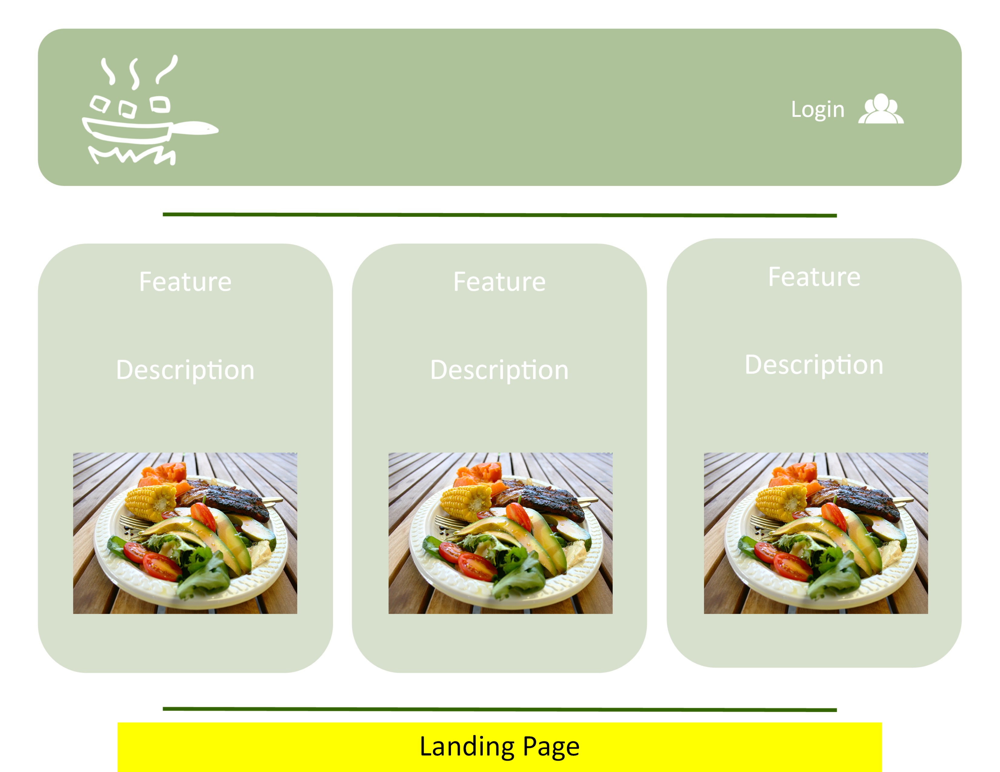 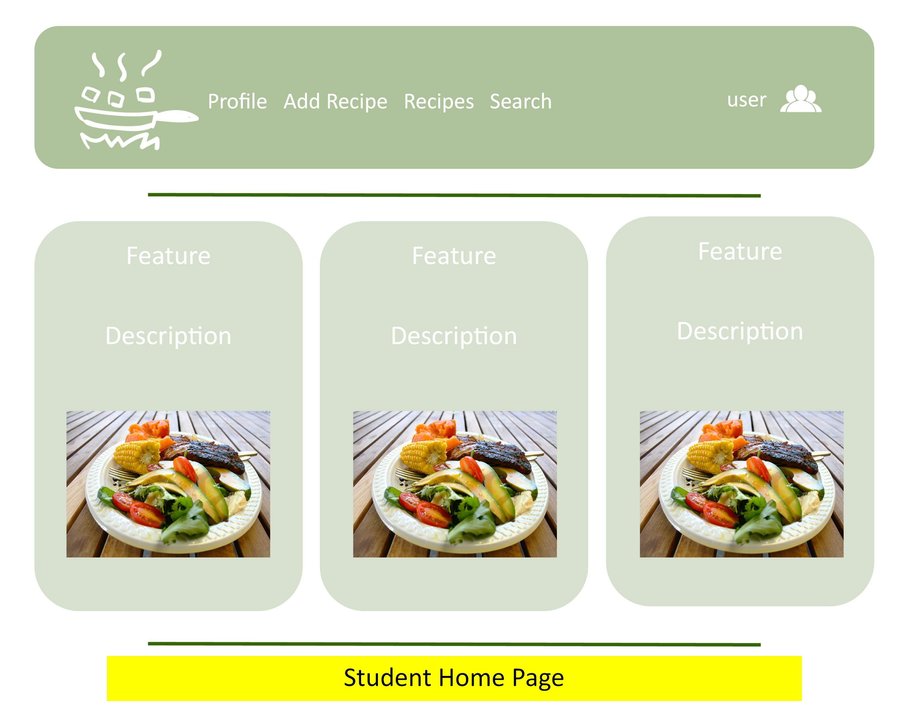 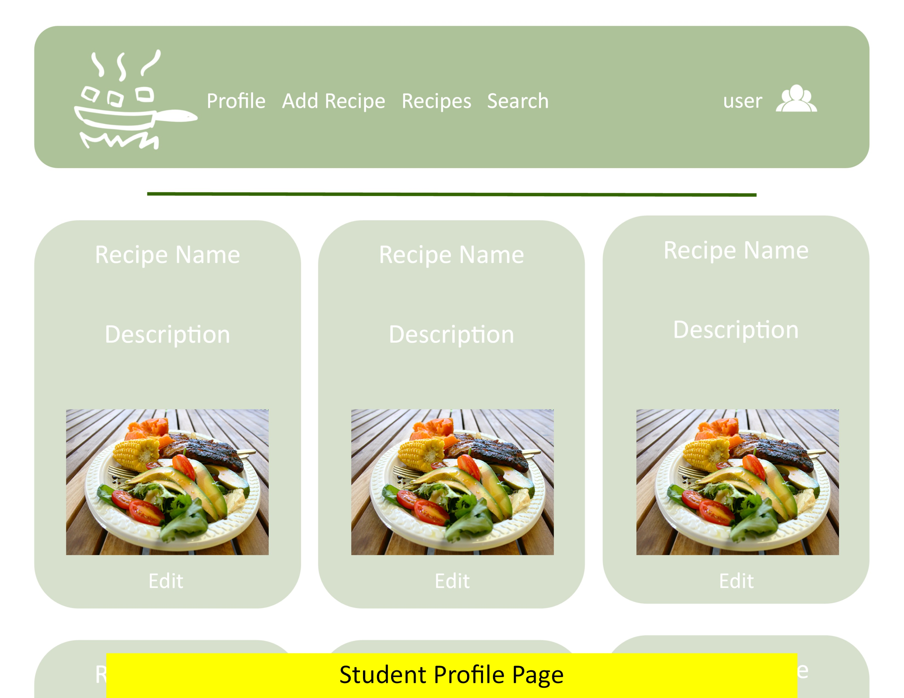 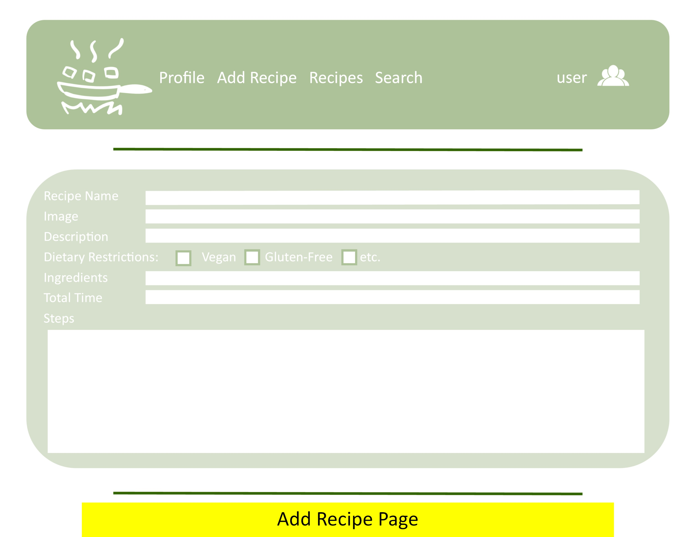 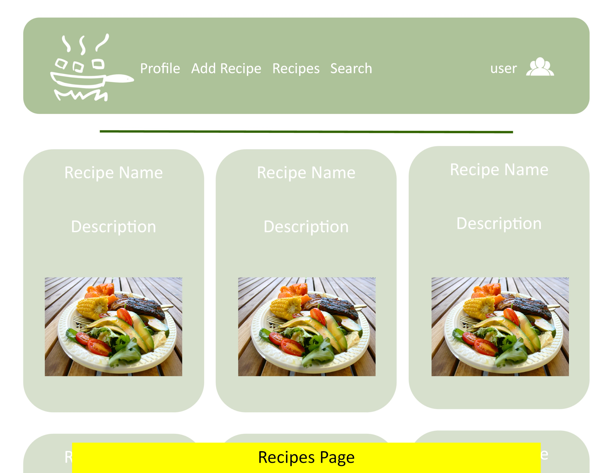 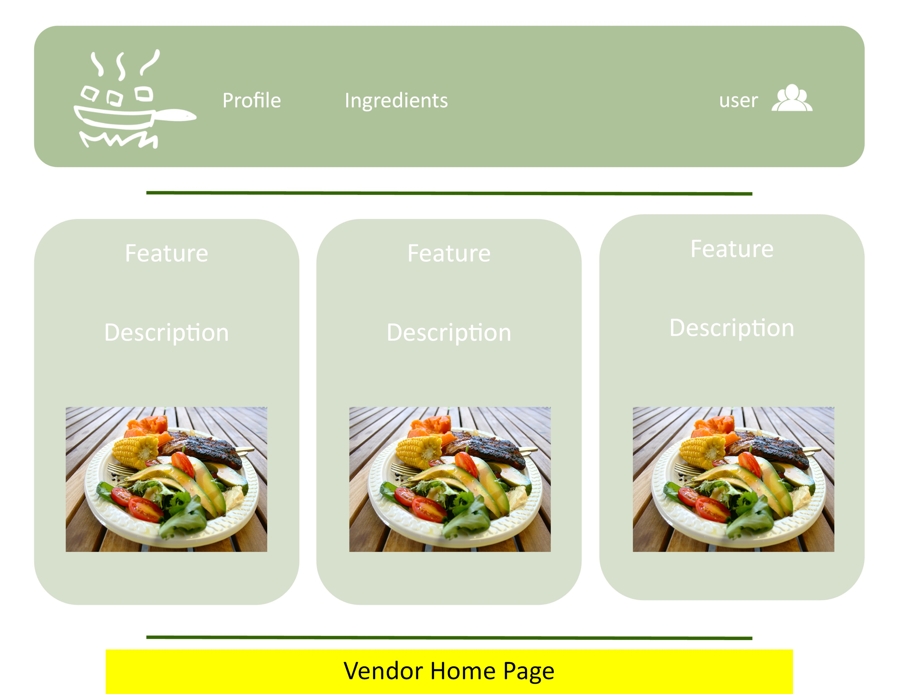 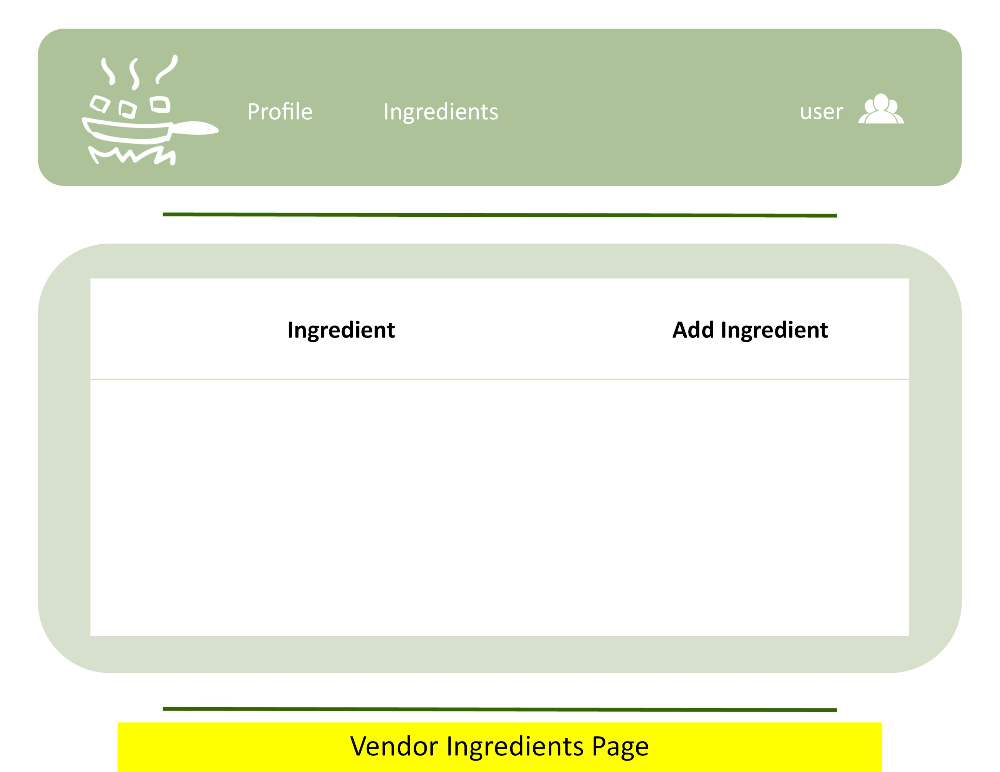 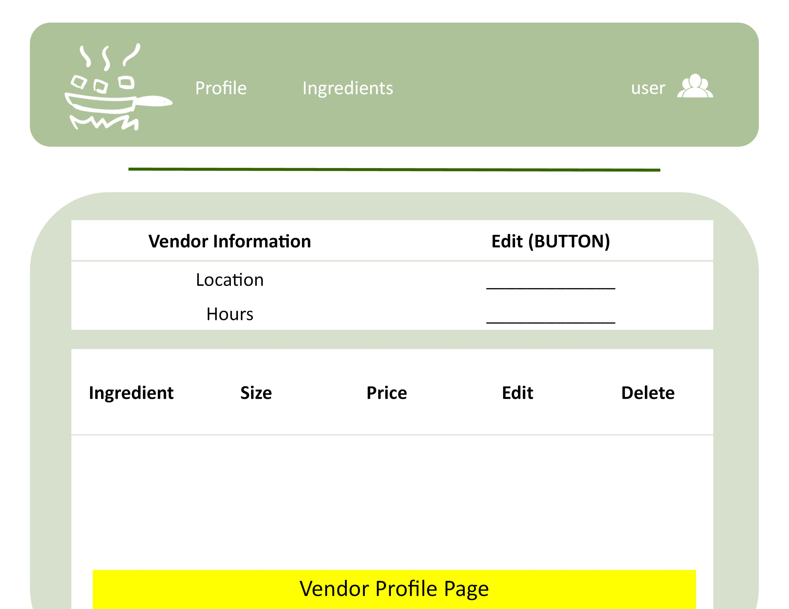 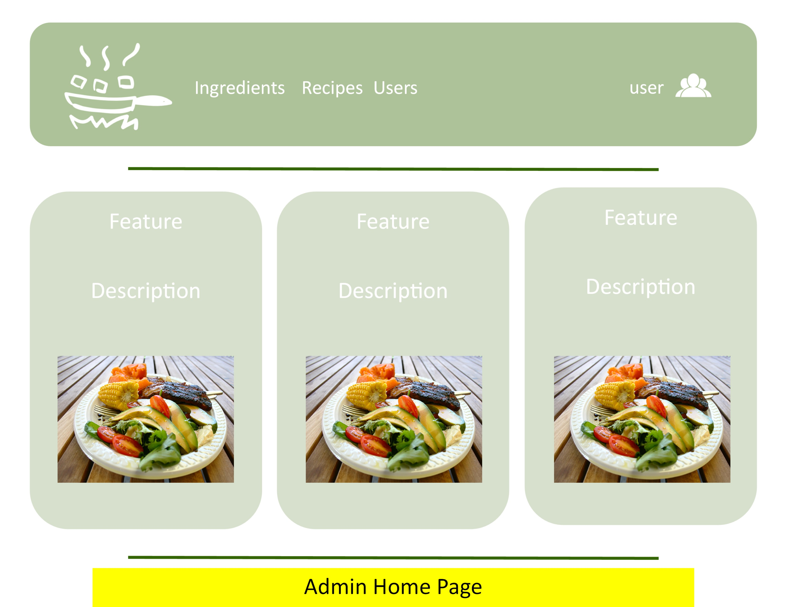We were able to complete the design for our landing page and decide on a color scheme to use. We were also able to deploy our application.
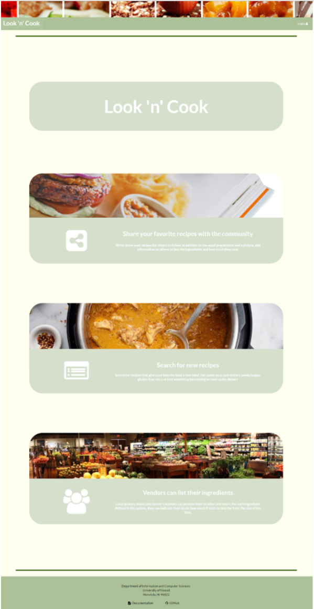As we were implementing the user home page and profile pages, we soon realized that we would need to create a schema for our recipes. With a recipe schema, we would be able to create recipe cards to display on the user home and profile page. So we started to work on the schema for our recipes in Milestone 1 and Milestone 2 as well.
Milestone 1 was implemented as Look 'n' Cook GitHub Milestone M1:
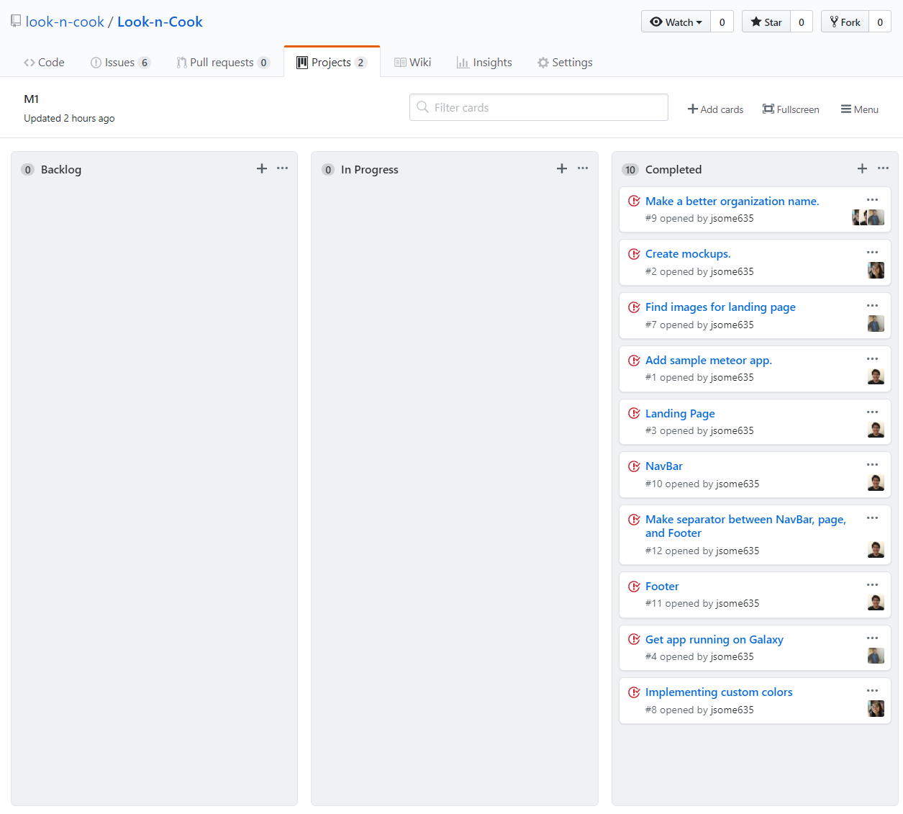 /////////////////////////////////////////////////////// ///////////////// Milestone 2 ///////////////////////// ///////////////////////////////////////////////////////Milestone 2: Recipe Schema
| Start Date | End Date |
|---|---|
| April 12, 2018 | April 24, 2018 |
For Milestone 2, we were able to impliement the recipe schemas, add/edit recipe pages, and admin pages. The biggest task of this milestone was to design and impliment the recipe schema. At first, we wanted to have two different schemas, one for recipes, and one for ingredients. Each ingredient would hold the ID to the recipe it belongs to. With this concept in mind, we started to impliment the schema. However, we ran into problems and had trouble implimenting it. So we created an array of ingredients in each recipe schema.
Milestone 2 was implemented as Look 'n' Cook GitHub Milestone M2:
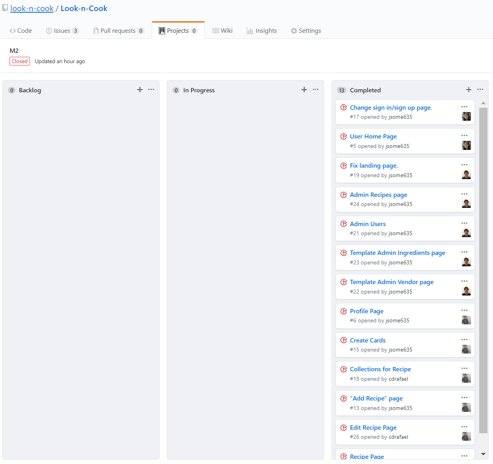